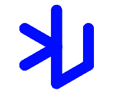
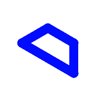
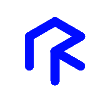
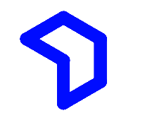

The editor has written me that he is in favor of avoiding "the notion that the artist is a kind of ape that has to be explained by the civilized critic". This should be good news to both artists and apes. With this assurance I hope to justify his confidence. To use a baseball metaphor (one artist wanted to hit the ball out of the park, another to stay loose at the plate and hit the ball where it was pitched), I am grateful for the opportunity to strike out for myself.
I will refer to the kind of art in which I am involved as conceptual art. In conceptual art the idea or concept is the most important aspect of the work. When an artist uses a conceptual form of art, it means that all of the planning and decisions are made beforehand and the execution is a perfunctory affair. The idea becomes a machine that makes the art. This kind of art is not theoretical or illustrative of theories; it is intuitive, it is involved with all types of mental processes and it is purposeless. It is usually free from the dependence on the skill of the artist as a craftsman. It is the objective of the artist who is concerned with conceptual art to make his work mentally interesting to the spectator, and therefore usually he would want it to become emotionally dry. There is no reason to suppose, however, that the conceptual artist is out to bore the viewer. It is only the expectation of an emotional kick, to which one conditioned to expressionist art is accustomed, that would deter the viewer from perceiving this art.
Conceptual art is not necessarily logical. The logic of a piece or series of pieces is a device that is used at times, only to be ruined. Logic may be used to camouflage the real intent of the artist, to lull the viewer into the belief that he understands the work, or to infer a paradoxical situation (such as logic vs. illogic). Some ideas are logical in conception and illogical perceptually. The ideas need not be complex. Most ideas that are successful are ludicrously simple. Successful ideas generally have the appearance of simplicity because they seem inevitable. In terms of ideas the artist is free even to surprise himself. Ideas are discovered by intuition. What the work of art looks like isn’t too important. It has to look like something if it has physical form. No matter what form it may finally have it must begin with an idea. It is the process of conception and realization with which the artist is concerned. Once given physical reality by the artist the work is open to the perception of al, including the artist. (I use the word perception to mean the apprehension of the sense data, the objective understanding of the idea, and simultaneously a subjective interpretation of both). The work of art can be perceived only after it is completed.
Art that is meant for the sensation of the eye primarily would be called perceptual rather than conceptual. This would include most optical, kinetic, light, and color art.
Since the function of conception and perception are contradictory (one pre-, the other post fact) the artist would mitigate his idea by applying subjective judgment to it. If the artist wishes to explore his idea thoroughly, then arbitrary or chance decisions would be kept to a minimum, while caprice, taste and others whimsies would be eliminated from the making of the art. The work does not necessarily have to be rejected if it does not look well. Sometimes what is initially thought to be awkward will eventually be visually pleasing.
To work with a plan that is preset is one way of avoiding subjectivity. It also obviates the necessity of designing each work in turn. The plan would design the work. Some plans would require millions of variations, and some a limited number, but both are finite. Other plans imply infinity. In each case, however, the artist would select the basic form and rules that would govern the solution of the problem. After that the fewer decisions made in the course of completing the work, the better. This eliminates the arbitrary, the capricious, and the subjective as much as possible. This is the reason for using this method.
When an artist uses a multiple modular method he usually chooses a simple and readily available form. The form itself is of very limited importance; it becomes the grammar for the total work. In fact, it is best that the basic unit be deliberately uninteresting so that it may more easily become an intrinsic part of the entire work. Using complex basic forms only disrupts the unity of the whole. Using a simple form repeatedly narrows the field of the work and concentrates the intensity to the arrangement of the form. This arrangement becomes the end while the form becomes the means.
Conceptual art doesn't really have much to do with mathematics, philosophy, or nay other mental discipline. The mathematics used by most artists is simple arithmetic or simple number systems. The philosophy of the work is implicit in the work and it is not an illustration of any system of philosophy.
It doesn't really matter if the viewer understands the concepts of the artist by seeing the art. Once it is out of his hand the artist has no control over the way a viewer will perceive the work. Different people will understand the same thing in a different way.
Recently there has been much written about minimal art, but I have not discovered anyone who admits to doing this kind of thing. There are other art forms around called primary structures, reductive, ejective, cool, and mini-art. No artist I know will own up to any of these either. Therefore I conclude that it is part of a secret language that art critics use when communicating with each other through the medium of art magazines. Mini-art is best because it reminds one of miniskirts and long-legged girls. It must refer to very small works of art. This is a very good idea. Perhaps "mini-art" shows could be sent around the country in matchboxes. Or maybe the mini-artist is a very small person; say less than five feet tall. If so, much good work will be found in the primary schools (primary school primary structures).
If the artist carries through his idea and makes it into visible form, then all the steps in the process are of importance. The idea itself, even if not made visual, is as much a work of art as any finished product. All intervening steps —scribbles, sketches, drawings, failed works, models, studies, thoughts, conversations— are of interest. Those that show the thought process of the artist are sometimes more interesting than the final product.
Determining what size a piece should be is difficult. If an idea requires three dimensions then it would seem any size would do. The question would be what size is best. If the thing were made gigantic then the size alone would be impressive and the idea may be lost entirely. Again, if it is too small, it may become inconsequential. The height of the viewer may have some bearing on the work and also the size of the space into which it will be placed. The artist may wish to place objects higher than the eye level of the viewer, or lower. I think the piece must be large enough to give the viewer whatever information he needs to understand the work and placed in such a way that will facilitate this understanding. (Unless the idea is of impediment and requires difficulty of vision or access).
Space can be thought of as the cubic area occupied by a three-dimensional volume. Any volume would occupy space. It is air and cannot be seen. It is the interval between things that can be measured. The intervals and measurements can be important to a work of art. If certain distances are important they will be made obvious in the piece. If space is relatively unimportant it can be regularized and made equal (things placed equal distances apart) to mitigate any interest in interval. Regular space might also become a metric time element, a kind of regular beat or pulse. When the interval is kept regular whatever is irregular gains more importance.
Architecture and three-dimensional art are of completely opposite natures. The former is concerned with making an area with a specific function. Architecture, whether it is a work of art or not, must be utilitarian or else fail completely. Art is not utilitarian. When three-dimensional art starts to take on some of the characteristics, such as forming utilitarian areas, it weakens its function as art. When the viewer is dwarfed by the larger size of a piece this domination emphasizes the physical and emotive power of the form at the expense of losing the idea of the piece.
New materials are one of the great afflictions of contemporary art. Some artists confuse new materials with new ideas. There is nothing worse than seeing art that wallows in gaudy baubles. By and large most artists who are attracted to these materials are the ones who lack the stringency of mind that would enable them to use the materials well. It takes a good artist to use new materials and make them into a work of art. The danger is, I think, in making the physicality of the materials so important that it becomes the idea of the work (another kind of expressionism).
Three-dimensional art of any kind is a physical fact. The physicality is its most obvious and expressive content. Conceptual art is made to engage the mind of the viewer rather than his eye or emotions. The physicality of a three-dimensional object then becomes a contradiction to its non-emotive intent. Color, surface, texture, and shape only emphasize the physical aspects of the work. Anything that calls attention to and interests the viewer in this physicality is a deterrent to our understanding of the idea and is used as an expressive device. The conceptual artist would want o ameliorate this emphasis on materiality as much as possible or to use it in a paradoxical way (to convert it into an idea). This kind of art, then, should be stated with the greatest economy of means. Any idea that is better stated in two dimensions should not be in three dimensions. Ideas may also be stated with numbers, photographs, or words or any way the artist chooses, the form being unimportant.
These paragraphs are not intended as categorical imperatives, but the ideas stated are as close as possible to my thinking at this time. These ideas are the result of my work as an artist and are subject to change as my experience changes. I have tried to state them with as much clarity as possible. If the statements I make are unclear it may mean the thinking is unclear. Even while writing these ideas there seemed to be obvious inconsistencies (which I have tried to correct, but others will probably slip by). I do not advocate a conceptual form of art for all artists. I have found that it has worked well for me while other ways have not. It is one way of making art; other ways suit other artists. Nor do I think all conceptual art merits the viewer's attention. Conceptual art is good only when the idea is good.
